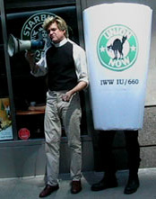

Submitted on Tue, 06/14/2005 - 5:38pm
 BERKELEY, CA - At 1:45 PM on Tuesday June 14, the recycling yard at Community Conservation Centers, Inc., better known as Buyback, grew suddenly silent. The paper line stopped, followed by glass and plastic. The forklifts and trucks pulled into parking spaces, and the roar of their engines died.
BERKELEY, CA - At 1:45 PM on Tuesday June 14, the recycling yard at Community Conservation Centers, Inc., better known as Buyback, grew suddenly silent. The paper line stopped, followed by glass and plastic. The forklifts and trucks pulled into parking spaces, and the roar of their engines died.
The workers gathered in the parking lot in front of the office, donning IWW pins and hats. They chanted ¡Sí se puede! and filed into General Manager Jeff Belchamber’s office. FW Jose Alvarez stepped to the front of the group.
“Yo Jeff, we’ve got some things we want to say to you,” Jose said.
Shop steward Randy Addison read the workers’ list of demands: a pay raise, an end to the job classification system that keeps some workers making far less then their fellow workers, more paid holidays (an issue that had resulted in a wildcat strike on MLK Day of this year), an end to the co-payment workers pay to see a doctor, more vacation time, and more opportunity for training and advancement.
Submitted on Sat, 06/11/2005 - 1:28pm
By Stanley Holmes- Business Week, June 3, 2005.
For a company that calls its employees "partners," Starbucks is plenty steamed over attempts by some to join a union. The National Labor Relations Board has set a June 15 hearing on claims that management engaged in illegal anti-union activity to keep employees at a New York Starbucks from joining the Industrial Workers of the World.
The IWW local says in the NLRB complaint that management threatened to withhold pay, spied on workers, and offered baseball tickets and health club passes to keep some from joining up. Starbucks officials deny the allegations. Says spokeswoman Audrey Lincoff: "We are pro-partner, and we will not interfere in partners' right in any decision they choose to make."
Starbucks workers announced last year they had formed the company's first North American union, at the store at 36th Street and Madison Avenue in Manhattan. The union isn't certified with the NLRB, but employee and organizer Daniel Gross said it has already won concessions, such as higher starting wages in New York and recognition of repetitive stress injuries, and is gaining members. Starbucks officials deny those claims.
Submitted on Sat, 06/11/2005 - 1:12pm
Audio Link (IWW piece is second story): http://lsiprelle.simpli.biz/laborradio/files/lo/winsheadlines.ram

June 10, 2005
A worker at a Starbucks in New York City is claiming she was fired for encouraging others to join a union. Sarah Bender was a barista at the 17th Street and 1st Avenue store. She says she became interested in joining the Retail Workers Union, a branch of the Industrial Workers of the World, after she heard about successes at the Madison Ave and 36th Street shop. The battle on Madison Avenue has led to Starbucks being called before the National Labor Relations Board on charges of union busting and threatening employees. Bender says once she brought up unions with her coworkers, similar actions occurred.
[Bender1]: Workers at my own store where getting interrogated and having closed door meetings with the manager. Some people were getting threatened to not get promoted if they were involved with me or involved with the union. A lot of things went on for about eight months before I got fired.
Submitted on Thu, 06/02/2005 - 5:01pm
By Michael K. Smith
 One hundred years ago Big Bill Haywood lumbered onto the platform at Brand’s Hall in Chicago, gaveled the podium with a piece of loose board, and called the assembly to order. Flanked by Eugene Debs, Mother Jones, and Lucy Parsons, he announced the birth of the Industrial Workers of the World, a union of native-born radicals whose capacity for militant solidarity was and remains unmatched in U.S. history.
One hundred years ago Big Bill Haywood lumbered onto the platform at Brand’s Hall in Chicago, gaveled the podium with a piece of loose board, and called the assembly to order. Flanked by Eugene Debs, Mother Jones, and Lucy Parsons, he announced the birth of the Industrial Workers of the World, a union of native-born radicals whose capacity for militant solidarity was and remains unmatched in U.S. history.
Haywood told the two hundred plus delegates crammed into the hot, overcrowded hall that they were “the Continental Congress of the working class,” adding that, “The aims and objects of this organization should be to put the working class in possession of the economic power, the means of life, in control of production and distribution, without regard to capitalist masters.” This ambition was to be fulfilled, not by violent seizure of state power, but by paralyzing big business with a series of general strikes, culminating in direct workers’ control of all industries.